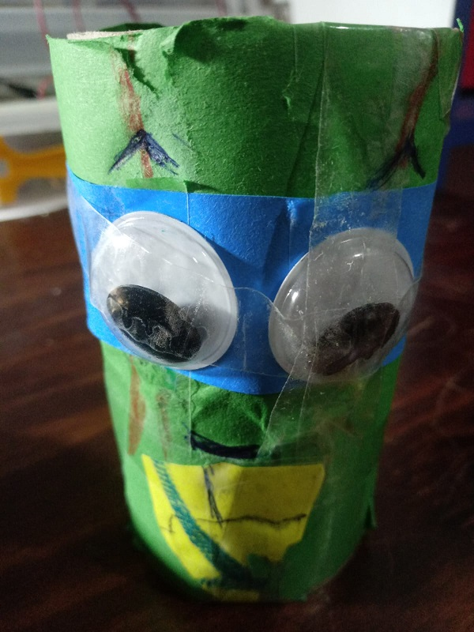
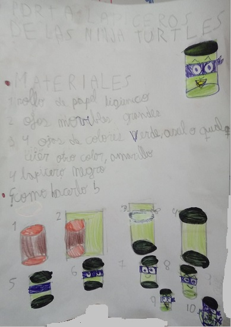
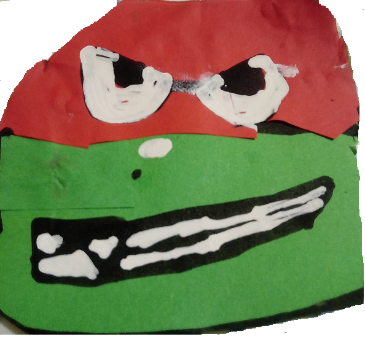
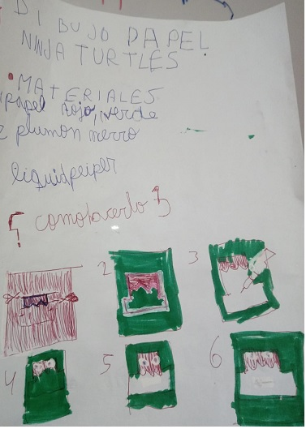
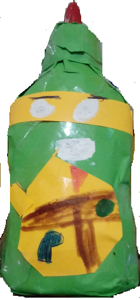
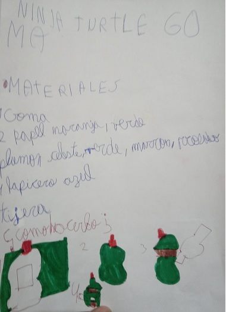
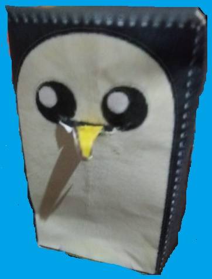
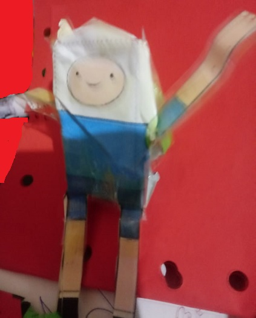

Esta es los ojos de tortuga Ninja

Como hacer un porta lapiceros de las tortujas ninja

Cara de rafael

Como hace la cara de la turtuga ninja

Goma de las tortujas ninja

Como hacer la goma

Como hacer un Pinguino de papel

Como hacer un Finn